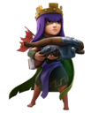
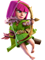
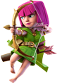
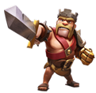
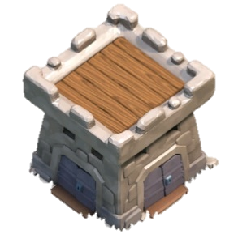
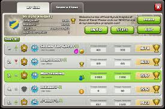
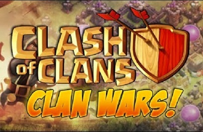

|  |  |  |
 |  |
 |


Clan Castle |
|
|  | Dalam game COC (Clash of Clans) Clan Castle adalah salah satu bangunan yang penting di dalam base Anda di permainan. Clan Castle sejatinya berguna untuk menyimpan Troop dan hasil War, tetapi dalam kegunaan dan fungsinya masih banyak gamer COC yang belum tau akan apa itu Clan Castle dan sekedar mempermainnkannya saja. Karena begitu awamnya pengetahuan para gamer pemula di COC, terkadang mereka melupakan pentingnya fungsi dari bangunan ini. Banyak gamer COC yang masih belum bisa memaksimalkan fungsi dari Clan Castle, bahkan gamer COC yang tergolong mahir sekalipun terkadang lupa akan manfaat dari bangunan ini. |
Join A Clan |
|
|  | Agar membantu meningkatkan kekuatan vilage,dan keuntungan gabung di sebuah clan itu kita bisa meminta pasukan dan pasukan itu bisa membantu defence vilage kita dan kita juga bisa saling sharing dengan anggota clan kita agar coc kita berkembang dengan baik dan sulit ditembus |
Clan Wars |
|
|  | clan war merupakan perang antar clan satu dengan yang lain. Jika anda menginginkan kemenangan dalam clan war di butuhkan kerjasama team yang solid, yang di haruskan setiap member clan harus ikut untuk berperang.
Untuk bisa ikut serta dalam clan war, anda harus memiliki clan terlebih dahulu. Jumlah member yang bisa mengikuti clan war sekitar 15 sampai dengan 50 pemain (15 vs 15, 20 vs 20, 25 vs 25, 30 vs 30, 35 vs 35, 40 vs 40, 45 vs 45 dan 50 vs 50 ). Untuk memulai CLAN WARS, Hanya petinggi di dalam clan yaitu seorang leader dan co-leader bisa memulai CLAN WARS ini.
Tahap dalam clan wars clash of clans : Preparation Day (Hari persiapan) Dalam tahap ini pemain bisa mempersiapkan base sebelum memulai berperang (24 jam) Jadi siapkan pertahanan kamu yang kuat sebelum di mulai Battle day, karena saat Battle Day base kamu tidak dapat di rubah. Battle Day (Hari Perang) Waktu Battle Day 24. Siapkan Clan kamu untuk memenangkan pertandingan ini. Atur strategi terbaik kamu bersama Clan kamu. |